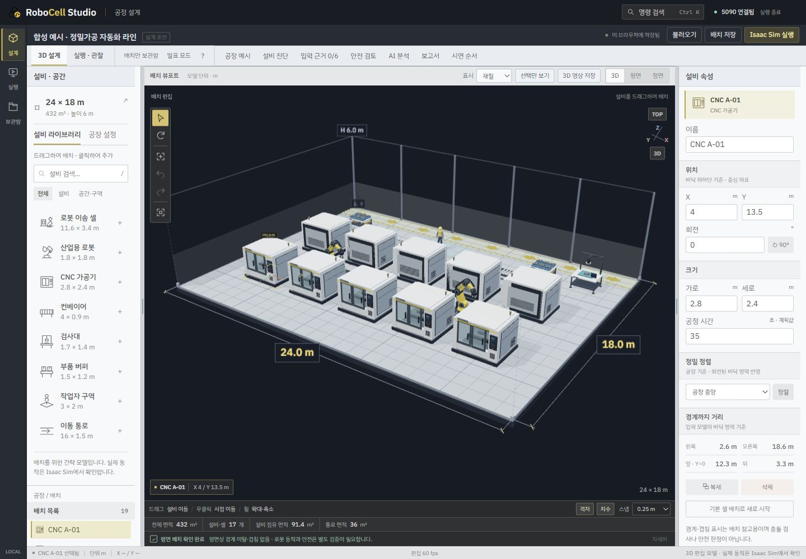
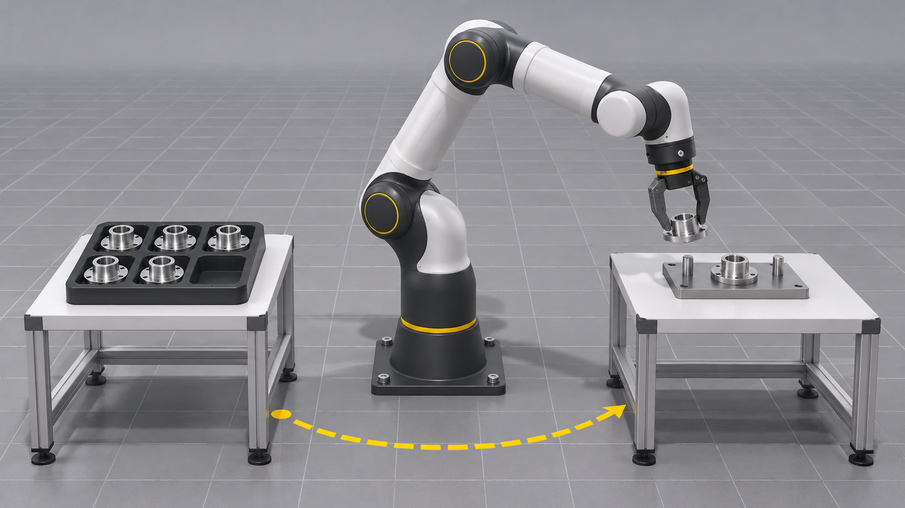

충돌·간섭 구간이송 순서 변경에 따른 동시 접근 구간을 점검
공장 배치 · 시뮬레이션 검토
공장 배치를 설계하고,
실행 근거로 검토합니다.

01 공장·설비 배치02 실행 조건 확인03 영상·기록 검토
01 · 스튜디오 소개
공정을 바꾸기 전에,
가능성부터 확인하세요.
로봇을 추가해야 할까요?
지금의 설비를 더 잘 활용할 수는 없을까요?
RoboCell Studio는 실제 공정을 가상공장에 담아
여러 개선안을 시험하고 비교하는 공정 설계 플랫폼입니다.
생산을 멈추기 전, 변화의 근거를 먼저 확인하세요.
SAFETY REVIEW생산성만큼 중요한 것은, 적용 전 안전 조건입니다.
개선과 안전 검토 살펴보기 ↗로봇의 움직임과 설비 간 이격거리, 속도·관절 제한을 가상에서 먼저 검토해 현장 적용 전 확인할 지점을 정리합니다.
가상 검토는 현장 위험성 평가나 안전 인증을 대신하지 않습니다.02 · 공정 솔루션
작은 변화에서 시작하는
공정의 새로운 가능성.
이송부터 대기시간, 에너지, 안전 검토까지.
서로 연결된 공정을 함께 살펴봅니다.
이송 시뮬레이션이송의 흐름을 바꾸면,
이송의 흐름을 바꾸면,
공정의 가능성이 보입니다.
작업대 사이를 오가는 로봇의 속도와 이송 주기를 조정해 보세요. 다음 공정의 준비 상태까지 고려해 불필요한 대기를 찾아봅니다.
시나리오로 비교하기 ↗ 로봇 이송 시뮬레이션CONCEPT / 01

작업대 A → 로봇 이송 → 작업대 B → 검사공정 개념도
03 · 시나리오 비교
같은 공정, 다른 선택.
차이를 데이터로 확인하세요.
화면 설명용 예시 데이터
현재 선택
개선안 B · 주기 조정
후공정 준비 시점에 맞춘 이송
핵심 변화대기시간 60% 감소 · 생산량 20% 증가기준안 대비 · 화면 설명용 예시
SAFETY REVIEW · 설계 단계
선택한 공정안에서 먼저 확인할 안전 조건
생산성 수치와 별도로, 충돌·간섭과 작업공간 조건을 시뮬레이션에서 점검할 항목입니다.
최소 이격거리대기 위치와 설비 사이 최소 이격거리 확인
속도·관절 제한작업 순서와 관절 제한 조건을 함께 검토
안전 조건의 충족 여부는 실제 공정 조건과 현장 기준을 반영한 시뮬레이션·위험성 평가 후 확인합니다.
시간당 생산량 108개/h
기준안 대비 +20.0%
기준안 90개/h평균 사이클타임 33.3초/개
기준안 대비 −16.8%
기준안 40초/개제품당 대기시간 8초
기준안 대비 −60.0%
기준안 20초제품당 추정 에너지 24Wh/개
기준안 대비 −20.0%
기준안 30Wh/개BASELINE → SELECTED
수치는 화면 설명용 가정값기준안과 선택안의 차이
시간당 생산량개/h
90→108
+20.0%평균 사이클타임초/개
40→33.3
−16.8%제품당 대기시간초
20→8
−60.0%제품당 추정 에너지Wh/개
30→24
−20.0% ANALYSIS PREVIEW
속도보다, 이송 타이밍에 주목하세요.
이 예시에서는 후공정의 준비 상태에 맞춘 이송이 대기시간을 줄였습니다. 실제 효과는 기업별 조건을 반영한 시뮬레이션으로 확인합니다.
위 수치는 디자인 시연용 가정값으로, 실제 Isaac Sim 실행 결과나 개선 효과를 의미하지 않습니다. 안전 검토 항목은 현장 위험성 평가나 법정 안전 인증을 대신하지 않습니다.
04 · 이용 안내
입력부터,
현장 적용 전 판단까지.
기업 담당자는 공정의 조건과 목표를 공유하고,
개발팀은 가상 검토 결과를 함께 정리합니다.
- 01 ↗기업 담당자
공정 정보 등록
목표 생산량, 작업 순서, 설비 배치와
지금 불편한 점을 전달합니다. - 02 ↗RoboCell 팀 · 함께 확인
조건 확인 ·
시나리오 설계처리시간·동선·설비 조건을 확인하고
기준안과 개선안을 정합니다. - 03 ↗RoboCell 팀 · 가상 검토
가상 시뮬레이션 ·
안전 검토생산·대기·에너지와 충돌·간섭,
이격거리·제한 조건을 살펴봅니다. - 04 ↗기업 담당자 · 함께 결정
결과 보고서 ·
현장 적용 판단결과 영상과 보고서를 바탕으로
바꿀 조건과 현장 확인 사항을 정합니다.